Verification journal and rerun guide — what every test checks, current results, work history, and the workflow needed to repeat verification after a pixel-layout change.
Target: wafer.space GF180, 4096 pixels and modest frame rate. The compact 40 µm-pitch pixel, capture column, joined tile and shared two-column bank have scoped physical/electrical evidence. The compact 64-column row/bank now exists and passes main DRC and both LVS paths. The full 64×64 chip is not yet assembled or qualified.
Completed and reviewed 30 September: all five illumination patterns pass at 27/125 °C, including the completed uniform bright cases at 359.158/402.995 µV total error against 500 µV. The port-model matrix contains 20 transients and 1,920 independently audited references. Bright finished in 3.97 hours including audits.
The authorized joint parasitic-placement follow-on also passes: four transients and 384 references in 3.87 hours. Moving all 67 conserved shunt totals to their recorded far nodes changes HOLD/STORE by at most 1.527 µV against 10 µV. All ten overnight simulation/audit containers exited successfully; all four new plots and saved evidence were reviewed. Those baseline batches are complete; the process batch below has completed with total-error failures.
Stopped for review: the candidate coarse runs finished, but the fine runs timed out and FF total error remains above 500 µV. See the interrupted-batch review below; no later stage has started. Remaining placement, supply/reference, real-driver and repeated-row checks follow. The full chip remains unqualified. Completion review · Current handoff.
Jump to one labeled pixel · Enlarge the labeled bank
This is the actual 64-column readout bank joined to one row of 64 pixels, rendered from the same GDS used for the completed alternating/inverse electrical matrix. Its overall size is 2,667.87 × 1,069.80 µm (2.668 × 1.070 mm). The tall repeated rectangles are storage capacitors; the light-sensitive pixels form the small row along the bottom.
The extracted census is 642 MOS devices, 512 MIM plates and 64 diodes. Main Magic/KLayout DRC reports zero errors; direct and resistor-collapsed LVS pass. These are scoped development checks.

Left edge and first four columns. Photodiodes are the bottom squares; storage plates continue above this crop.
This enlarged crop comes from the same implemented bank GDS. It shows the first pixel at the left end of the bottom row: one photodiode and three transistors. The large storage capacitors in the full-bank image belong to the column readout circuitry, outside this pixel.
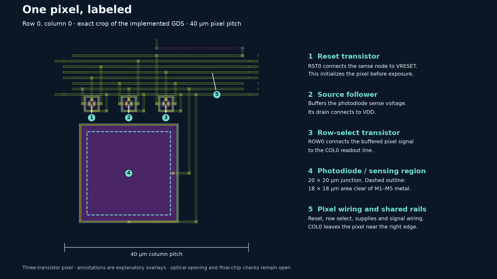
How it works: the reset transistor initializes the photodiode sense node; collected light changes its voltage during exposure. The source follower buffers that voltage, and the row-select transistor connects it to the column readout. The dashed 18 × 18 µm region is clear of M1–M5 metal; it is not a qualified passivation opening or a measured optical response.
Unannotated pixel crop · Pixel coordinates and GDS source hash · Back to the labeled bank
bash scripts/run-tools.sh klayout -b -r scripts/render-current-pixel-layout.py bash scripts/run-tools.sh python3 scripts/annotate-current-pixel-layout.py python3 scripts/update-overview-sections.py
The renderer checks the exact checkpoint GDS hash before making the crop. Device roles and positions follow the compact-pixel placement and circuit connections.
Implementation boundary: this is one pixel row with its readout bank, not the assembled 4,096-pixel sensor. The remaining rows, real decoding/drivers, pads and power distribution, fill and final-chip manufacturing checks are still required. The planned full-chip placement is shown in the die-fit diagram.
Unannotated full view · Exact compressed GDS · Checkpoint contents and reproduction · View dimensions and source hash
The older 80 × 50 µm-pitch design cannot fit the full-slot envelope. The current 2.668 × 1.070 mm ground-grid bank fits its local budget. See the updated die-fit diagram, run dates and costs, and latest simulation evidence.
Earlier 16-column electrical progress: the 16-column refinement/placement extension passes its selected checks: 46 transients, 1,152 references, 433.171 µV worst total error and 301.667 µV tracking. All five patterns at both temperatures now have 100/50 ns comparisons; all 19 individual shunts and joint placement are checked for the hot inverse pattern.
The 8 µm ground bus alone fails the selected 64-column readout diagnostic at 1,994.440 µV. The new distributed ground return fails that same diagnostic at 547.178 µV total error and 340.253 µV tracking. Its 2.668 × 1.070 mm layout passes main DRC/both LVS paths and fits the local bank budget. Extending acquisition to 12 µs passes the selected test at 269.281 µV total error and 62.529 µV tracking, without lengthening the 20 µs slot. Full-bank, full-corner and tapeout qualification remain open.
Full-bank matched references, nominal/hot operation, refinement and shunt placements precede multirow loading and real decoding/drivers. Exact-chip layout, power/pads, optical packaging and manufacturing prechecks remain release gates. No tapeout-ready claim is made.
Completed and reviewed 28 September: both complete 64-column screens pass, at 27 °C alternating and 125 °C inverse illumination. All four 100/50 ns transients finish 128 reads each, with 192 references per 100 ns case. Worst total error is 372.606/438.213 µV against 500 µV; largest saved-sample refinement is 0.133 µV against 10 µV. All 1,711 distinct evidence files verify. Simulation and auditor containers exited successfully. The crossed 27 °C inverse/125 °C alternating cases also pass, reviewed 29 September: 387.179/430.383 µV worst total error and 0.150 µV maximum saved-sample refinement. The full alternating/inverse temperature matrix now contains eight completed transients and 768 references. All 1,707 new evidence files verify; all batch jobs and the auditor have finished. At that review, no new batch was running; the uniform-dark batch above has since completed and passed. Uniform coverage has since completed; remaining placement/corner coverage is still open. The current bank also passes the provider-pinned main DRC with zero violations; see the PDK source reconciliation and updated 3.126 mm² unreserved-core budget.
Completion plan · Next steps · Passing two-column control. Dated sections below preserve earlier development evidence; historical 3×3 targets and earlier “next step” statements are superseded by this plan.
All six uniform cases independently audited and reviewed. Each bounded batch tested one uniform pattern at 27/125 °C: four fresh 100/50 ns transients and 384 matched references. All three batches finished successfully.
| Uniform illumination | Temperature | Result | Total error, µV | Tracking, µV | Sample refinement, µV |
|---|---|---|---|---|---|
| dark: 0 pA/pixel | 27 °C | PASS | 248.852 | 14.965 | 0.133 |
| dark: 0 pA/pixel | 125 °C | PASS | 411.912 | 81.559 | 0.149 |
| middle: 80 pA/pixel | 27 °C | PASS | 340.408 | 30.395 | 0.135 |
| middle: 80 pA/pixel | 125 °C | PASS | 391.739 | 72.481 | 0.132 |
| bright: 240 pA/pixel | 27 °C | PASS | 359.158 | 3.028 | 0.065 |
| bright: 240 pA/pixel | 125 °C | PASS | 402.995 | 15.919 | 0.061 |
The 500 µV accuracy and 10 µV refinement limits are unchanged. Uniform scenes have no dark/bright neighbor contrast check; it is explicitly not applicable. Physical MIM event refinement remains independently checked. The completed alternating/inverse reports and exact GDS remain unchanged.
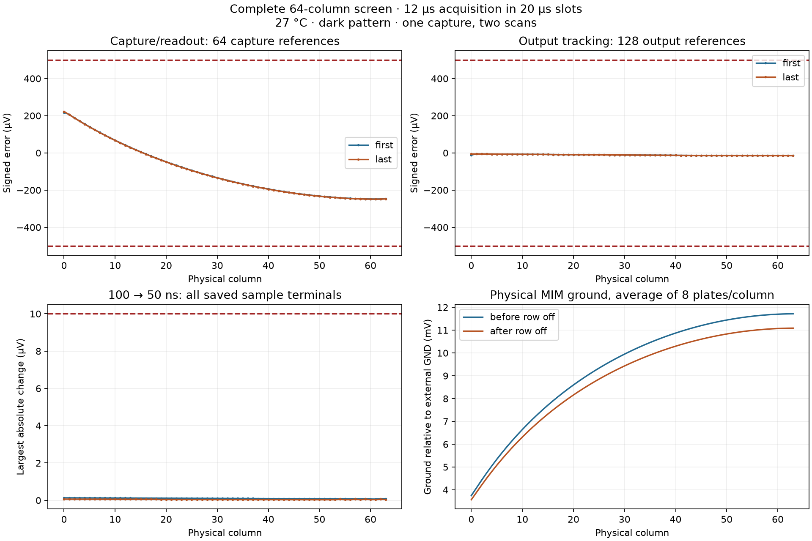
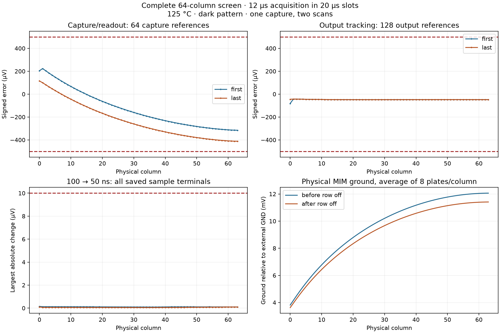
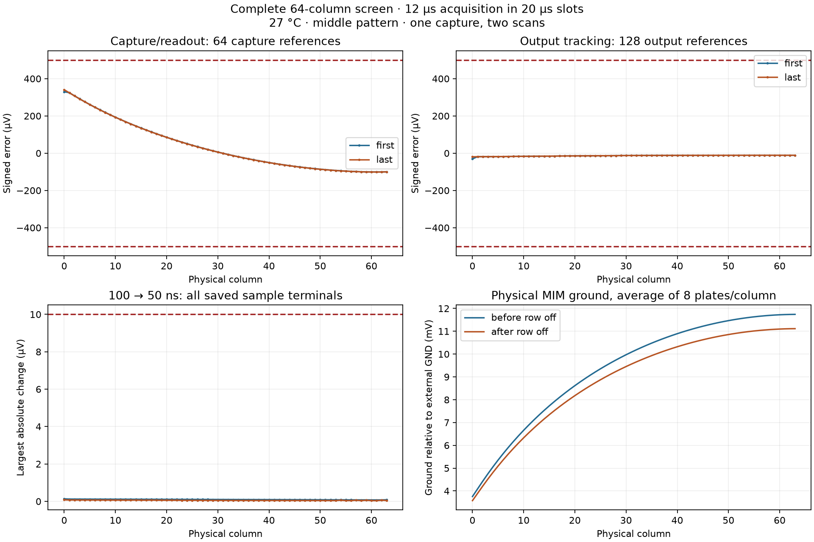
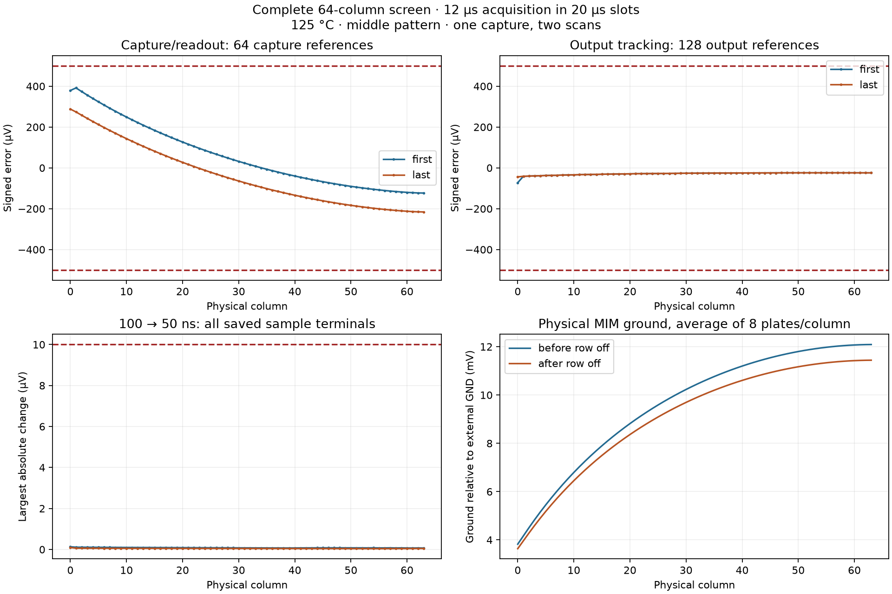
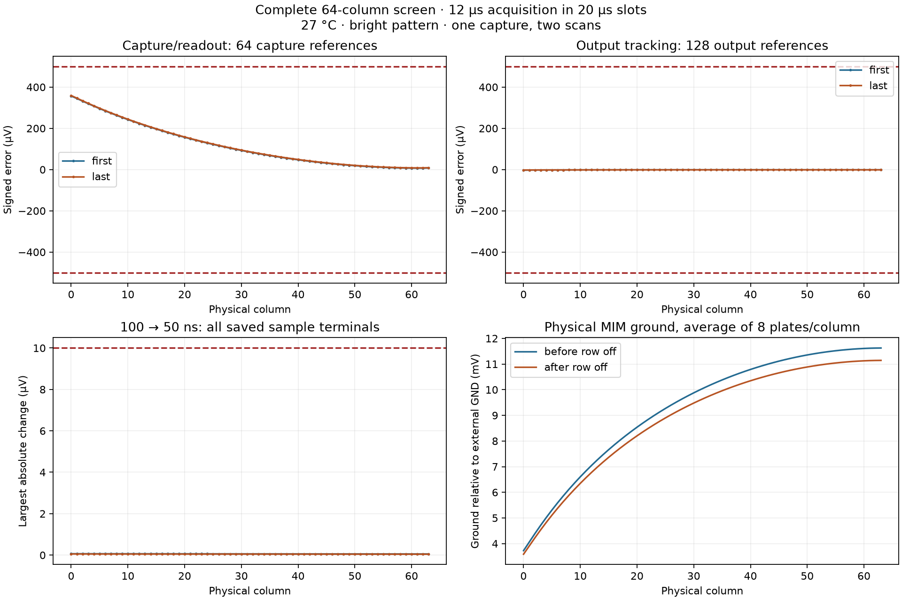
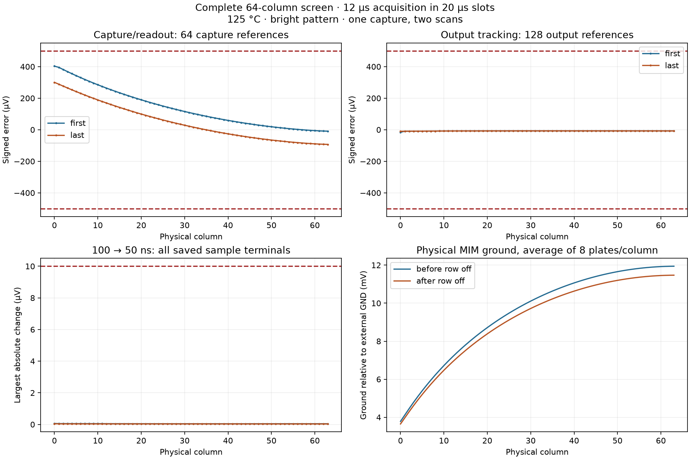
All six uniform cases completed 12 transients and 1,152 references. The selected joint placement batch also passes. Remaining corners, individual placements, real drivers, repeated rows and final-chip checks remain open.
This bounded batch jointly moves the 67 conserved positive shunt-capacitance totals from their ports to the recorded far nodes. An exact netlist comparison checks that only those endpoints change. It uses nominal alternating and hot inverse illumination, four 100/50 ns transients and 384 references.
| Case | Selected result | Total error, µV | HOLD placement change, µV | STORE placement change, µV |
|---|---|---|---|---|
| 27 °C / alternating | PASS | 372.235 | 1.189 | 1.527 |
| 125 °C / inverse | PASS | 437.952 | 1.027 | 1.373 |
Accuracy remains limited to 500 µV, timestep and physical-event refinement to 10 µV, and HOLD/STORE placement sensitivity to 10 µV. Placement comparisons use the matching retained port-model baseline. Pending results carry no pass claim. A joint check does not qualify individual placements, other patterns or operating corners.
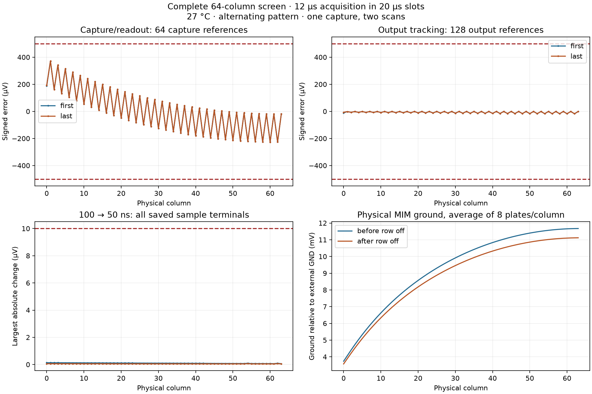
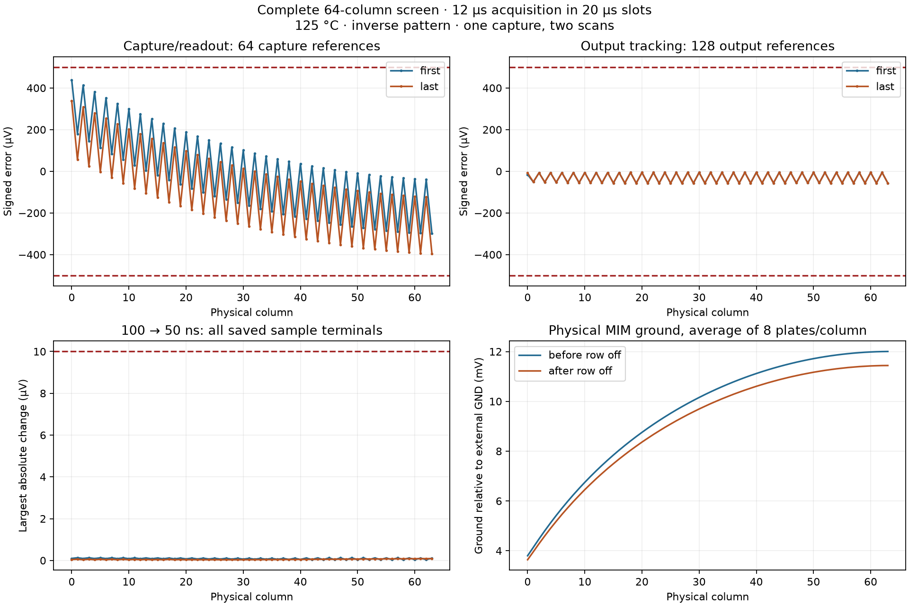
Real drivers, repeated rows and final-chip qualification remain open. See current handoff for the automatic continuation status.
Status: simulating. Current stage: hot-primary. Independently audited 0 / 18 planned cases. Completed stages: 0 / 8. Updated 2026-09-30T21:49:55.486903+00:00.
Prior checkpoint commits 06889e5 and ac7c3e1 are pushed. The interrupted three-device batch remains historical evidence. The new 64-column bank contains 898 MOS devices, 512 MIM plates and 64 pixel diodes, with five NMOS capture devices per column and the established ground grid. Its physical DRC/LVS and 64 capture chains are checked separately; the old checkpoint is preserved.
Acquisition is 13 µs with the ADC reset shifted to 15.5 µs within the unchanged 20 µs slots. Each case runs fresh 100/50 ns transients; the coarse run has 192 matched capture/output references. Both runs save physical capacitor terminals and the 256 internal switch nodes. Limits remain 500 µV total/tracking and 10 µV sample/event refinement. The fine transient must also stay below 500 µV against the coarse capture references. A completed simulator run alone does not authorize continuation.
Queue: hot-primary → hot-mixed → room-primary → room-mixed → typical-alternating → typical-dark → typical-middle → typical-bright. Later stages launch only after every preceding case passes its independent audit. A measured failure, simulator/auditor failure, source mismatch, low disk reserve or deadline stops progression for review. Active runs in a failed batch finish and retain their evidence. The first batch may take roughly 6–10 hours; this is an estimate. The complete queue can run much longer; new stages stop launching after 48 hours, while an active stage is allowed to finish within its job limits.
| Case | Total | Tracking | Sample refinement | Result |
|---|
Failures: {}. The original bank's process failures remain historical evidence; passing selected candidate cases does not establish full-chip or exhaustive process qualification. Diode/MIM, supply/wire and non-typical illumination coverage remain open.
Exact launch plan · Live progress · Persistent profile · New physical audit
The longer-age two-column model experiment compared three, four and five series NMOS capture devices with 13 µs acquisition. Fast-corner totals were 604.318, 468.926 and 396.116 µV respectively. All 12 diagnostic transients and 72 references were independently reviewed; these model-only results selected the five-device physical experiment.
The new physical column contains 11 MOS devices and preserves the 40 µm pitch, outline, MIM plates and upper storage routing. The two-column bank has 30 MOS devices; the separate 64-column bank has 898 MOS, 512 MIM plates and 64 photodiodes. Both physical banks pass Magic/KLayout main DRC and direct/resistor-collapsed LVS. All 64 five-device capture chains are checked. Earlier routing attempts failed spacing or connectivity checks and remain saved.
| Placement | MOS corner | Total | Tracking | Result |
|---|---|---|---|---|
| rc-port | typical | 135.681 | 17.282 | PASS |
| rc-port | ss | 192.235 | 151.607 | PASS |
| rc-port | ff | 190.357 | 1.559 | PASS |
| rc-far | typical | 135.716 | 17.282 | PASS |
| rc-far | ss | 192.268 | 151.608 | PASS |
| rc-far | ff | 190.316 | 1.559 | PASS |
Twelve physical-control transients and 72 fresh references pass independent raw-data checks. Numerical, capacitor/private-node event, contrast and placement checks pass. Maximum sampled port/far HOLD/STORE change: 0.0522 µV. These controls use the unmodified extracted circuit. The new timing samples at 14.999 µs, ends acquisition at 15.01 µs and resets the ADC at 15.5 µs within each 20 µs slot.
Full-bank electrical results remain pending. The detached queue uses three concurrent jobs, an eight-hour transient watchdog, twelve-hour job limit and a 48-hour limit on starting subsequent stages. Every stage requires independent passing audits; failures preserve evidence and stop progression. Density, antenna, CUP, other diode/MIM/supply/wire corners and full-chip qualification remain open.
Reproduction profile and failed-attempt record · Physical control evidence · Model-only diagnostic review · Portable physical checkpoint
Fixed-candidate replay: python3 scripts/rerun-bank-stack5.py --tag new-tag. Add --plan-only to inspect the commands. A changed pixel first requires rebuilding and requalifying its physical extraction and updating the versioned profile.
No simulation jobs remain active, and the sequence has not advanced. All three 100 ns runs and their 576 references completed. All three 50 ns runs hit the configured four-hour transient timeout near the end of the 3.98 ms schedule. The independent review validates the completed coarse evidence and available refinement prefixes; it does not count the missing samples as passes.
| MOS corner | Coarse total | Coarse tracking | Available fine samples | Worst available saved-node difference | Interpretation |
|---|---|---|---|---|---|
| TYPICAL | 391.959 | 39.582 | 125/128 | 0.252 | Coarse limits pass; full refinement incomplete |
| SS | 445.375 | 289.966 | 126/128 | 0.407 | Coarse limits pass; full refinement incomplete |
| FF | 602.413 | 3.476 | 122/128 | 0.102 | Above total-error limit |
The fast-corner issue is visible before the timeout: 7 available fine samples exceed 500 µV against the same matched coarse capture references used by the normal paired audit. The largest available fine error is 577.376 µV. This supports investigating the remaining capture/storage error; raising the runtime limit alone does not establish a passing design.
The slow and typical coarse measurements are within their limits, but their complete refinement checks remain pending. The fine traces end at 3.862–3.932 ms; 373 of 384 sample instants are available. No missing values are extrapolated. Coarse fast-corner worst total error is 602.413 µV at late column 63, with only 3.476 µV maximum output tracking error. The settled-state change includes storage and supply/bias changes; its exact cause requires further diagnosis.

Next: diagnose and reduce the remaining fast-corner retention/capture error, then rerun the corrected full-bank candidate with a longer transient watchdog and a reviewed concurrency limit. Preserve completed references and interrupted traces; they are useful evidence but cannot turn incomplete pairs into passes. Later process/pattern stages remain blocked by this review.
Independent evidence review · Original stopped-controller status. The timeout belongs to the per-transient runner: outer job records correctly show exit code 1 rather than their own timeout flag. All original pinned sources and prior commits remain intact.
Status: stopped_for_review. Current stage: hot-primary. Independently audited 0 / 18 planned cases. Completed stages: 0 / 8. Updated 2026-09-30T20:35:56.193679+00:00.
The prior verified checkpoint and changelog were pushed as 06889e5 before this work. The new 64-column bank contains 770 MOS devices, 512 MIM plates and 64 pixel diodes, with three NMOS capture devices per column and the established ground grid. Its physical DRC/LVS and 64 capture chains are checked separately; the old checkpoint is preserved.
Acquisition is 12.5 µs within the unchanged 20 µs slots. Each case runs fresh 100/50 ns transients; the coarse run has 192 matched capture/output references. Both runs save physical capacitor terminals and the 128 new internal switch nodes. Limits remain 500 µV total/tracking and 10 µV sample/event refinement. A completed simulator run alone does not authorize continuation.
Queue: hot-primary → hot-mixed → room-primary → room-mixed → typical-alternating → typical-dark → typical-middle → typical-bright. Later stages launch only after every preceding case passes its independent audit. A measured failure, simulator/auditor failure, source mismatch, low disk reserve or deadline stops progression for review. Active runs in a failed batch finish and retain their evidence. The first batch may take roughly 3–5 hours; this is an estimate. The complete queue can run much longer.
| Case | Total | Tracking | Sample refinement | Result |
|---|
Failures: {"typical-inverse125-50": "Simulation exited unsuccessfully; inspect exit record", "ss-inverse125-50": "Simulation exited unsuccessfully; inspect exit record", "ff-inverse125-50": "Simulation exited unsuccessfully; inspect exit record", "typical-inverse125": "A simulation failed", "ss-inverse125": "A simulation failed", "ff-inverse125": "A simulation failed", "sequence": "Stage did not pass all required independent audits"}. The original bank's process failures remain historical evidence; passing selected candidate cases does not establish full-chip or exhaustive process qualification. Diode/MIM, supply/wire and non-typical illumination coverage remain open.
Exact launch plan · Live progress · Persistent profile · New physical audit
The candidate is now implemented in a separate physical column and two-column bank. Three W = 1 µm, L = 0.5 µm NMOS capture devices in series, combined with 12.5 µs acquisition, pass the selected extracted-circuit tests at typical, SS and FF. The original 64-column GDS remains the existing checkpoint; its known process failures are not relabeled by these results.
Both the new column and small bank pass Magic/KLayout main DRC and direct/resistor-collapsed LVS. Two neighboring columns pass the 40 µm abutment check. The column outline is unchanged, and M4, M5, capacitor-marker and via4 geometry is exactly unchanged. The column contains nine MOS devices; the bank contains 26 MOS devices, 16 capacitor plates and two photodiodes. Density, antenna, CUP and full-chip checks remain outside this evidence.
| MOS corner | Port-placement total | Far-placement total | Worst tracking | Selected checks |
|---|---|---|---|---|
| TYPICAL | 152.197 | 152.172 | 25.624 | PASS |
| SS | 181.039 | 181.071 | 206.674 | PASS |
| FF | 258.749 | 258.782 | 2.514 | PASS |
Six combined model-only transients and 36 references passed before physical qualification. The extracted candidate adds 12 transients and 72 references across two wiring-capacitance placements. All 18 transients and 108 references are reviewed. Each timestep has fresh capture and output references. Numerical, physical-capacitor-event and contrast checks pass. Moving all four approximated shunt groups together changes sampled HOLD/STORE by at most 0.044 µV, below 10 µV. All extracted resistors and collapsed capacitance totals are retained.
The first physical attempt extended routes into a capacitor region and failed two Magic rules; it is retained as a failed attempt. The corrected placement puts the two added NMOS devices at y = 144 and 156 µm and preserves the original capacitor routes. The isolated-column extraction includes small negative shunt corrections on one new private net; these are consolidated with its positive total, with raw extraction retained. The assembled-bank extraction does not need that private-net consolidation.
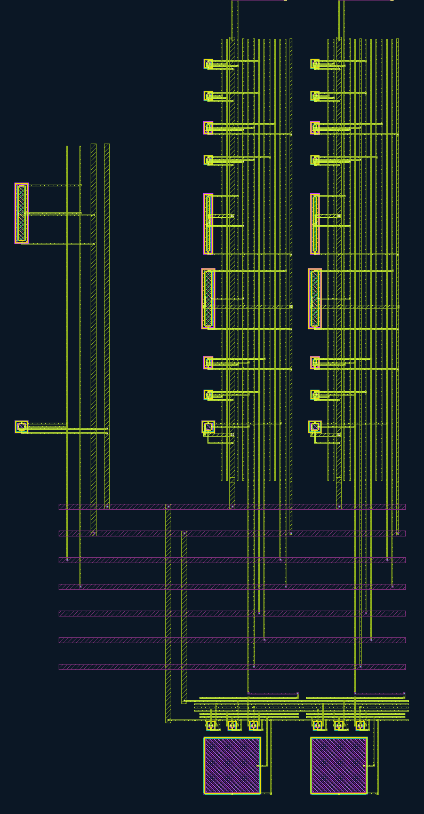
Next: build the candidate as a separate 64-column bank with the established ground grid, verify DRC/LVS and topology, then run matched typical/SS/FF corner tests with 12.5 µs acquisition. Full-bank testing is the next potentially hours-long stage; no such batch has been started here. Other temperatures, illumination patterns, mixed corners, supply/wire and full-chip coverage remain open.
Physical audit · Port raw-data review · Far raw-data review · Placement comparison · Reproduction profile
New scripts and evidence are versioned separately from earlier hash-pinned runners. The reproduction profile records the commands and fixed physical source for this candidate; a changed pixel requires rebuilding and requalifying that source before rerunning electrical coverage.
The three-device series NMOS candidate passes the selected two-column screen at typical, SS and FF. At FF, total error falls from 1240.756 µV with the original switch to 596.505 µV with two series devices and 410.653 µV with three. The limit remains 500 µV. This identifies a candidate to implement physically; it does not fix or qualify the existing 64-column GDS.
Twenty fresh transients and 120 matched-state references cover the complete capture and two readout scans at 125 °C, inverse illumination, 100/50 ns timesteps. Both timesteps have their own capture/output references. All sample, event, error-refinement and contrast checks pass, including the added stack nodes. Worst saved-sample difference is 1.346 µV; worst event difference is 1.590 µV, below 10 µV. Fresh original-switch SS/FF controls reproduce the retained waveforms within 0.001 µV at HOLD.
| Series devices | MOS | Acquisition µs | Total error | Tracking | Screen |
|---|---|---|---|---|---|
| 1 | TYPICAL | 12 | 204.428 | 37.893 | PASS |
| 1 | SS | 12 | 187.313 | 281.789 | PASS |
| 1 | FF | 12 | 1240.756 | 3.073 | FAIL |
| 2 | TYPICAL | 12 | 175.705 | 38.006 | PASS |
| 2 | SS | 12 | 208.035 | 281.730 | PASS |
| 2 | FF | 12 | 596.505 | 3.932 | FAIL |
| 3 | TYPICAL | 12 | 154.150 | 38.011 | PASS |
| 3 | SS | 12 | 236.198 | 281.676 | PASS |
| 3 | FF | 12 | 410.653 | 4.055 | PASS |
| 1 | SS | 12.5 | 137.243 | 206.737 | PASS |
Timing result: extending acquisition from 12 to 12.5 µs reduces SS tracking error from 281.789 to 206.737 µV and total error from 187.313 to 137.243 µV on the original small bank. Acquisition finishes falling at 14.51 µs within the 20 µs slot; ADC reset begins rising at 15 µs, leaving 0.49 µs separation. This is a fresh simulation, not a later sample of the old waveform. The full-bank SS failure still requires verification, as does combining the extension with the series-switch candidate.
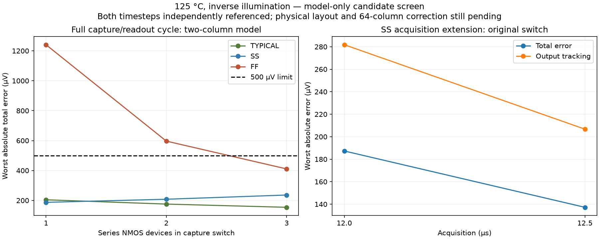
Earlier plan (physical small-bank work now completed above): implement the three-device capture switch in a separate physical column revision, check DRC/LVS and extracted small-bank behavior, then verify the complete 64-column schedule. First check the combined candidate and timing change. The model-only stack retains each original device's geometry parameters and omits new routing parasitics; physical extraction may change the result. Mixed MOS, diode/MIM, supply/wire and full-chip checks remain open. No new hours-long batch is active.
Screen evidence · Independent raw/deck review · Rerun profile
Reproduce this screen with a fresh output directory, then audit it:
bash scripts/run-tools.sh python3 scripts/screen-bank-capture-cycles.py --out build/candidate-cycles-NEW bash scripts/run-tools.sh python3 scripts/review-bank-capture-cycles.py --source build/candidate-cycles-NEW --out build/candidate-review-NEW
The screen is tied to the retained two-column physical parent. After a pixel/layout change, rebuild and validate the parent, version these scripts for the new source, and rerun the physical baseline and full-bank matrix; this command is not yet a general pixel-rebuild controller.
Both process cases finished, but neither passes total accuracy. SS reaches 512.924 µV and FF 2000.323 µV against 500 µV. Output tracking, numerical/event refinement and contrast pass. All four transients and 384 references are audited; 1,740 evidence files verify. Runtime was 2.92 hours. Watcher exit 1 intentionally reports the measured failures; all four simulator exits are 0.
SS worst total error separates into −389.105 µV output tracking and −123.819 µV settled-state change. FF worst separates into −3.303 and −1997.019 µV respectively. Settled-state change includes stored voltages and local supply/bias changes. FF STORE drops by as much as 1.522 mV between scans; SS drops by at most 0.016 mV.
Next step already investigated: five frozen-state DC probes identify the NMOS capture switch as the dominant fast-corner leakage path. At column 63 it drains 37.747 pA in FF, versus 4.252 pA typical and 0.613 pA SS. In FF, the PMOS injects about 0.234 pA, all eight MIM plates together leak about 0.036 pA, and modeled storage-follower gate current is zero. Direct clamp/probe current balance agrees within 0.00254 pA; saved DC voltages change by less than 0.000003 µV.
The initial three-terminal probe used subtraction of nearly equal voltages to infer clamp current and failed its pA-level balance check. Its artifacts remain retained. The second version adds all eight capacitor branches and a direct clamp-current probe; all five balance checks pass. Use these direct measurements for current attribution.
| NMOS capture switch | Column 0 | Column 63 |
|---|---|---|
| Original: one device, L = 0.5 µm | 42.573 | 37.551 |
| One device, L = 0.75 µm | 35.836 | 29.957 |
| One device, L = 1.0 µm | 30.138 | 24.841 |
| One device, L = 1.5 µm | 23.685 | 19.237 |
| Two series devices, each L = 0.5 µm | 20.689 | 17.154 |
| Three series devices, each L = 0.5 µm | 13.535 | 11.030 |
Six length cases and four series-stack cases completed with unchanged PDK corners and tolerances. These changes reduce DC leakage, but none is an accuracy-qualified correction. They have not been physically laid out or checked for capture resistance, charge injection, transient retention and process coverage. The original GDS is unchanged.

Earlier plan (completed in the candidate screen above): compare lower-leakage capture-switch candidates through complete small-bank capture/readout transients, and test a modest acquisition-timing extension for SS with nonoverlapping ADC reset. Only then rebuild a selected physical candidate and rerun the bank matrix. Additional mixed-corner coverage follows correction of these known failures. No new hours-long batch is running.
Completion review · Error decomposition · Direct current probes · Length screen · Series-stack screen
Slow/slow (SS) and fast/fast (FF) transistor models at 125 °C with inverse illumination: four fresh 100/50 ns transients and 384 matched references. This starts with the smallest-margin typical-process case. Diodes, MIM capacitors, supply and extracted wiring retain their nominal settings; mixed MOS and other operating corners remain open.
| Case | Audited status | Total error, µV | Tracking, µV | Sample refinement, µV |
|---|---|---|---|---|
| SS / 125 °C / inverse | FAIL | 512.924 | 390.140 | 0.439 |
| FF / 125 °C / inverse | FAIL | 2000.323 | 4.533 | 0.109 |
Limits remain 500 µV total/tracking and 10 µV sample/event refinement; contrast ordering is required. Every matched reference uses the same MOS corner as its transient. Pending is not a pass. No later batch starts automatically.
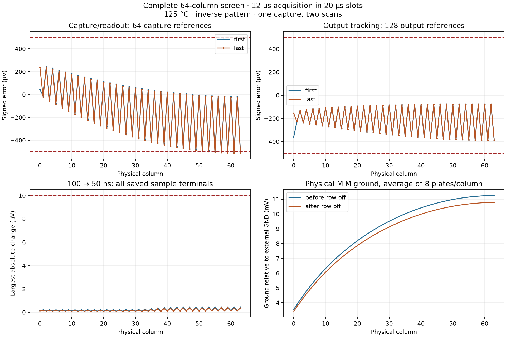
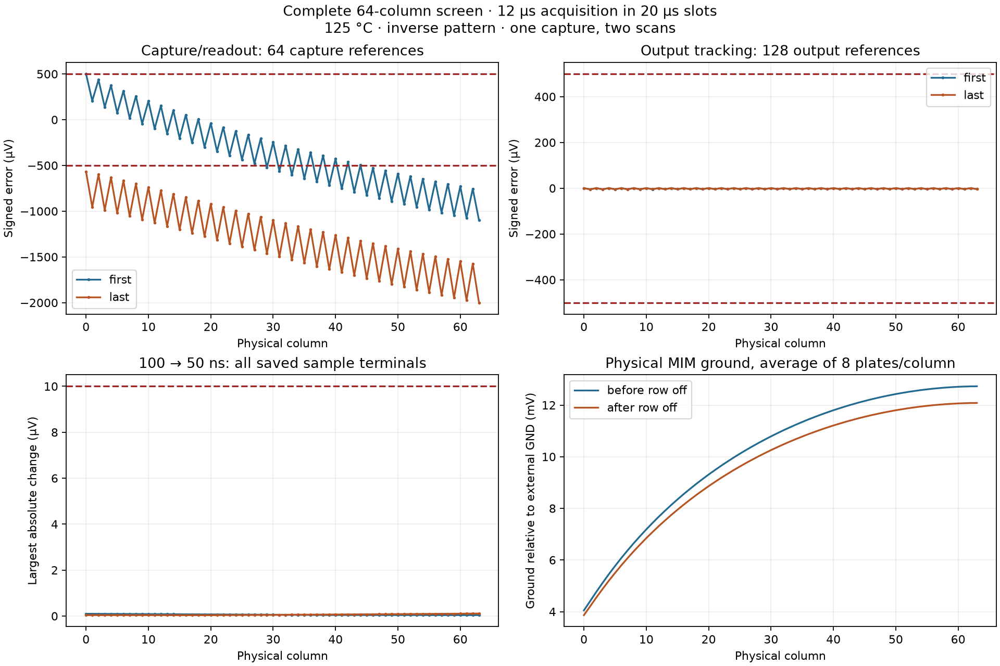